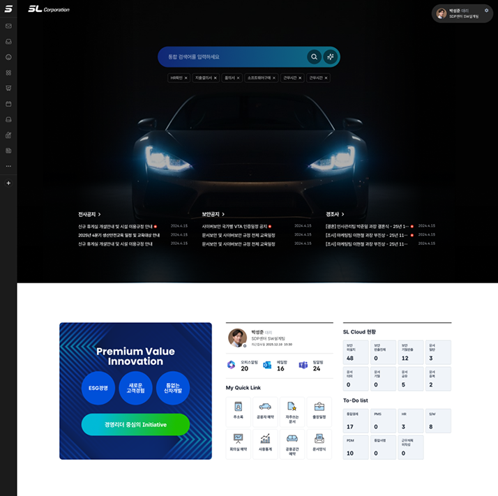
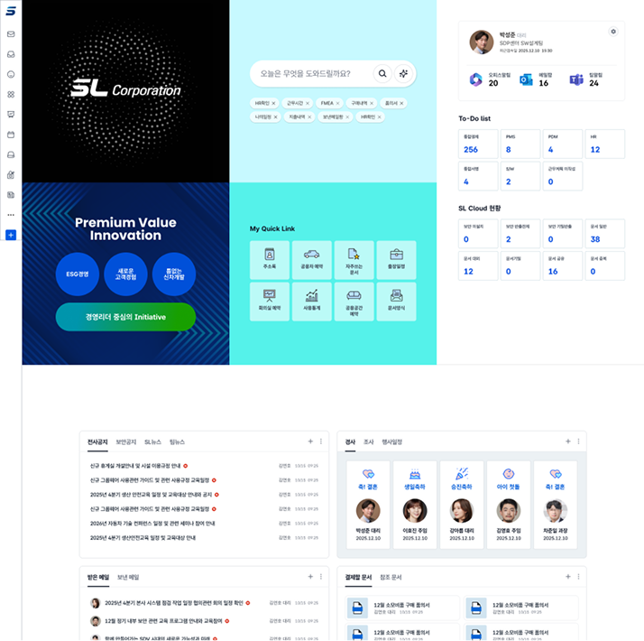
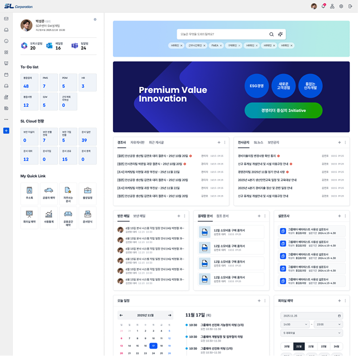

SL corporation - 디자인 시안

Type-A
-
사업영역을 상징하는 Visual Graphic으로 시각적인 임팩트를 주며 Minimal한
UI 구성으로 검색 및 주요 공지 메세지에 집중하도록 디자인
-
-화면 최상단 Hero 영역 배경 전체에 자동차 사진 또는 관련 Video Clip를
사용하여 시각적인 주목도를 높임. Hero 영역의 UI design은
우선순위가 높은 검색영역, 주요 공지 를 최대한 간결한 형태로 제공
-
-두번째 Section에는 고정적으로 메세지 배너 및 사용자의 사용현황 정보를
제공하는 알림 정보 및 개인화된 서비스 링크를 제공
-
-세번째 Section에는 사용자가 필요에 따라 추가하거나, 배치할 수 있는
포틀렛 들의 영역

Type-B
-
최우선 핵심 서비스와 중요 메세지를 격자형 블록에 배치하여 일반적인
그룹웨어 UI 디자인과 차별성을 강조하는 디자인
-
-최상단 Section 첫번째 블록에는 기하학적인 도형의 모션으로 Visual Impact를 주며
회사의 첨단 느낌을 추상적으로 표현.
-
-최상단 Section 블록별로 전체검색, 메세지 배너, 사용자 현황 알림 Dashboard 등을
베치하여 사용성을 높이는 동시에 독특한 특성을 부여
-
-두번째 Section은 사용자가 필요에 따라 추가하거나, 배치할 수 있는
포틀렛 들의 영역으로 사용

Type-C
-
자주 사용하는 MS업무소프트웨어의 Design Pattern가 유사한 UI Design으로
Seamless한 사용자 경험을 제공
-
-왼쪽 영역에 개인 현황 알림 및 개인 설정 링크등을 배치하고 메뉴 위치에 따라
열고 닫을 수 있도록 디자인
-
-오른쪽 메인 영역 상단에 통합검색을 배치하여 강조하고 그 아래 메세지 배너를 배치,
이 두 요소는 고정적인 요소
-
-메세지 배너 아래 영역에는 사용자가 직접 추가, 배치할 수 있는 포틀렛 들의 영역으로 사용